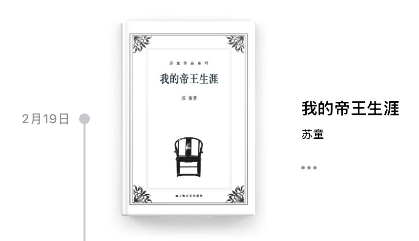

“我”游离于这一切之外，不了解发生了什么，也不知道为什么就登上了皇位；“我”可以任性地草菅人命，却又处处收母后和太后的桎梏。“我”是太后阴谋下错位的帝王，她玩弄了所有人，挑选了一个更好操控的傀儡；“我”承接了本不该承接的命运，滥用权力，逃避责任，最后被皇兄收回了本属于他的东西。


甲鱼不正经书评8
《我的帝王生涯》
太好看了……要不是今天有事，我就在昨天一口气看完了。
冷艳的文风，前半段的故事透着森森鬼气，奢靡的宫中白日歌舞升平，夜晚却哀叹悲泣不止——于是“我”下令割掉了那些妇人的舌头。
开头很《局外人》，父王死了，王位给了“我”，但我与这一切都格格不入。 https://t.co/umrdtJO0q5
《我的帝王生涯》
太好看了……要不是今天有事，我就在昨天一口气看完了。
冷艳的文风，前半段的故事透着森森鬼气，奢靡的宫中白日歌舞升平，夜晚却哀叹悲泣不止——于是“我”下令割掉了那些妇人的舌头。
开头很《局外人》，父王死了，王位给了“我”，但我与这一切都格格不入。 https://t.co/umrdtJO0q5